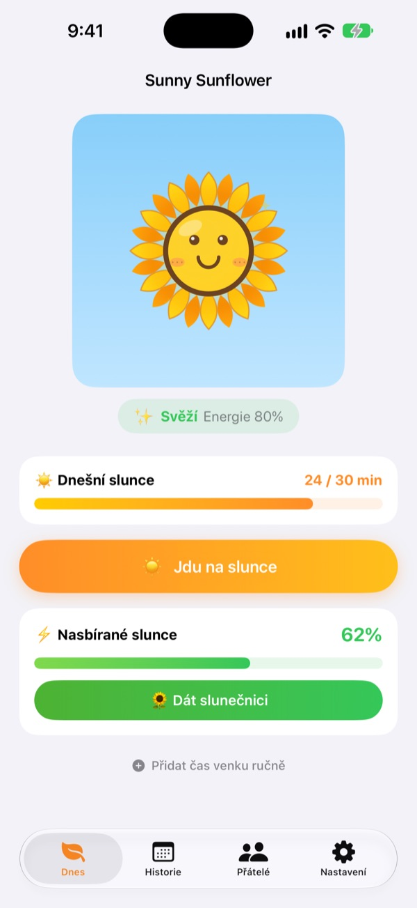
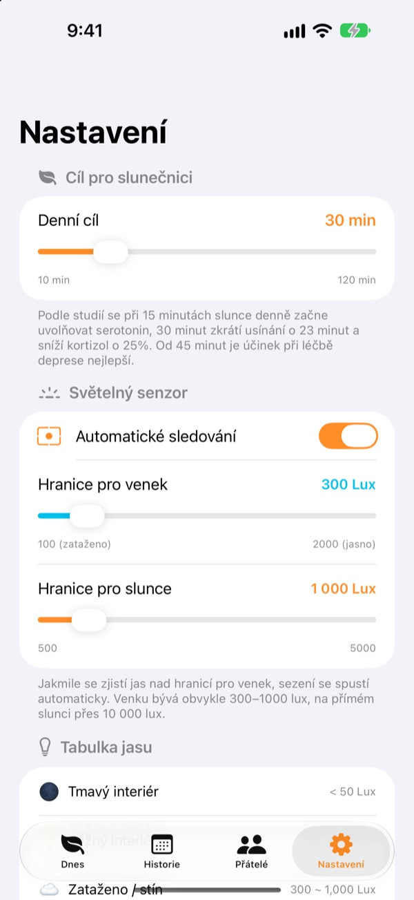
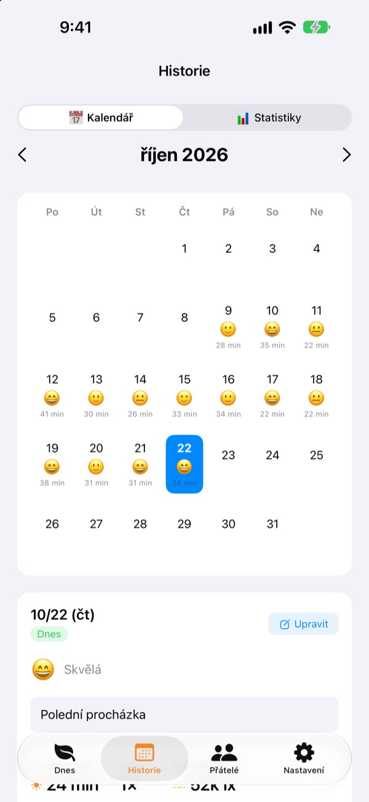
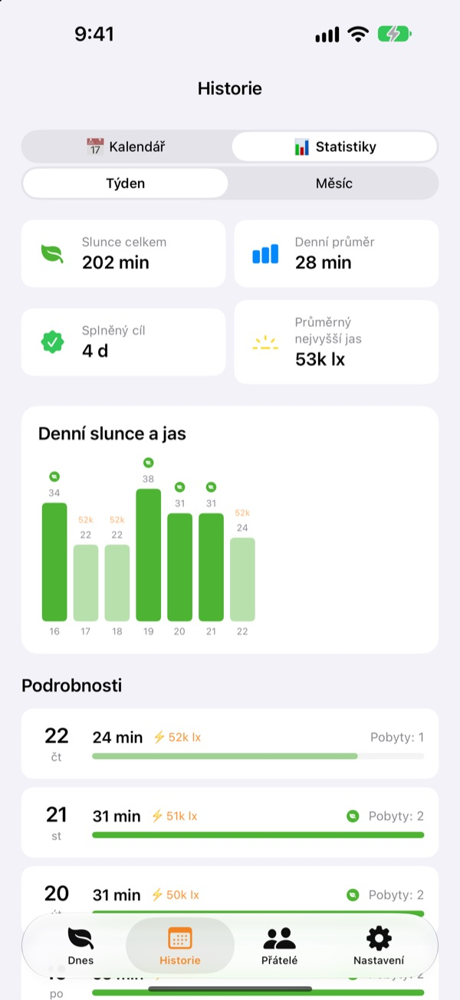

Dnešní slunce
krmí vaši slunečnici
Stačí vyjít ven a čas na slunci se načítá sám. Dejte nasbírané slunce slunečnici a bude svěží. Když na ni pár dní zapomenete, začne vadnout.
Všechny funkce jsou zdarma. Záznamy zůstávají ve vašem zařízení.

Nasbírejte si trochu slunce
Vyberte, jak je světlo silné a jak dlouho, nachytejte slunce a dejte ho slunečnici, která už věší hlavu.
Kolik minut slunce jste dnes dostali?
Pár kroků cestou do práce, rychlé zaběhnutí na oběd. Když strávíte den uvnitř, až večer zjistíte, že jste denní světlo skoro neviděli. Sunny Sunflower ukáže váš čas venku v číslech a slunečnice už čeká na zítřejší procházku.
Vyjděte ven a měří sama
Klepněte na Jdu na slunce a vyjděte ven. Aplikace odhaduje jas kolem vás z údajů o expozici přední kamery. Když světlo zůstane na venkovní úrovni asi 30 sekund, začne záznam. Žádné fotky nepořizuje ani neukládá.
Potom se senzor zapíná jen na 20 sekund každé 2 minuty, aby šetřil baterii.

Slunce a nálada den po dni
V kalendáři má každý den svůj čas na slunci, emoji nálady a krátkou poznámku. Byli jste venku a neměřili? Přes Přidat čas venku ručně doplníte 5 až 120 minut.

Týden a měsíc na první pohled
Týdenní a měsíční statistiky ukazují, které dny jste splnili cíl a kolik slunce máte v průměru. Denní cíl nastavíte od 10 do 120 minut a na hlavní obrazovce hned vidíte, kolik dnes ještě chybí.
Widgety na ploše a zamčené obrazovce i Dynamic Island ukazují dnešní slunce a stav slunečnice.

Začněte ve třech krocích
- 1
Nastavte denní cíl
Výchozí je 30 minut. V nastavení zvolíte 10 až 120.
- 2
Vyjděte na slunce
Klepněte na
Jdu na sluncea vyjděte ven s otevřenou aplikací. O přístup ke kameře požádá jen jednou. - 3
Nakrmte slunečnici
Klepnutím na
Dát slunečniciproměníte nasbírané slunce v energii.
Jak se ze světla stává slunce
- Pod 300 lx
- Slabé světlo: nepočítá se jako čas na slunci
- 300–1 000 lx
- Venku / zataženo: 1–3 % za 10 minut
- 1 000–10 000 lx
- Slunce: 3–33 % za 10 minut
- Od 10 000 lx
- Silné slunce: přes 33 % za 10 minut
- Nasbírané slunce
- minuty × průměrný jas ÷ 3 000 (nejvýš 100 % za jedno měření)
- Energie slunečnice
- klesá o 2,5 % za hodinu, asi o 60 % za den
Hranici pro venek nastavíte v nastavení mezi 100 a 2 000 lx. Výchozí je 300 lx.
Časté otázky
Jak se slunce měří?
Aplikace odhaduje jas kolem vás (osvětlenost) z údajů o expozici přední kamery. Když světlo chvíli zůstane na venkovní úrovni, záznam začne sám. Fotky nepořizuje ani neukládá.
Nevybíjí měření hodně baterii?
Jakmile je slunce potvrzené, senzor nezůstává zapnutý. Každé 2 minuty se asi na 20 sekund probudí a změří znovu, zbytek obstará obyčejný časovač.
Moje slunečnice pořád vadne.
Slunečnice ztrácí každou hodinu 2,5 % energie. Nasbírejte slunce a klepněte na Dát slunečnici. Za jasného dne stačí 15 až 20 minut na přímém slunci, aby se vyrovnal celý den.
Byl(a) jsem venku, ale nic se nezaznamenalo.
Dole na hlavní obrazovce je Přidat čas venku ručně, kde doplníte 5 až 120 minut. Pokud se za zataženého počasí záznam nerozbíhá, snižte v nastavení hranici pro venek.
Jak funguje funkce přátel?
Když jste s kamarádem blízko sebe (zhruba do 10 m) a oba právě měříte slunce, spojíte se automaticky. S novým člověkem je potřeba nejdřív potvrdit společné slunění, pak už to jde samo. Okvětní lístky se zbarví a během 3 dnů se vrátí k původní barvě, společný čas se uloží na kartě Přátelé. Oba potřebujete aplikaci a povolený přístup k Bluetooth a místní síti.
Je to opravdu zdarma?
Ano. Bez reklam a bez nákupů, se všemi funkcemi. Pokud se vám líbí, můžete v aplikaci nechat spropitné, ale nic dalšího neodemyká.
Můžu si záznamy zálohovat nebo přenést?
Vše zůstává v zařízení bez serveru a uchovává se posledních 90 dní. Samostatný export není, ale záznamy jsou součástí běžné zálohy iPhonu na iCloud nebo do počítače.
Jak smažu všechna data?
V nastavení aplikace klepněte na Reset dat, nebo aplikaci smažte. Nelze to vrátit zpět.
Kam nahlásit chybu?
Napište na adresu níže nebo založte issue na GitHubu (github.com/M1zz/SunlightTracker/issues). Hodně pomůže model zařízení, verze iOS a popis, co se stalo. Obvykle odpovídáme do několika dní.
Dotazy nebo náměty posílejte na leeo@kakao.com.